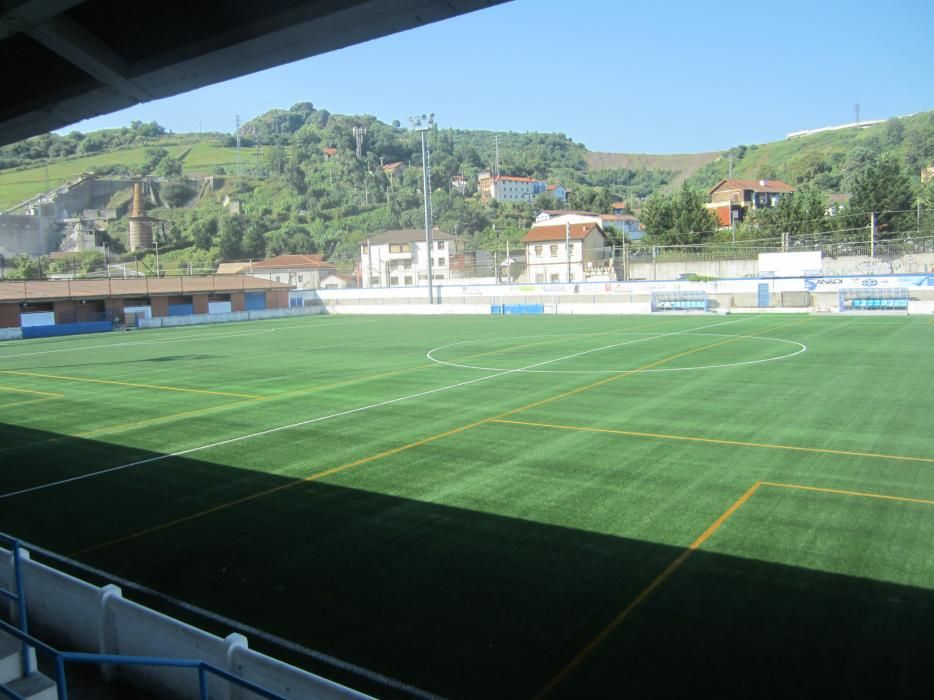
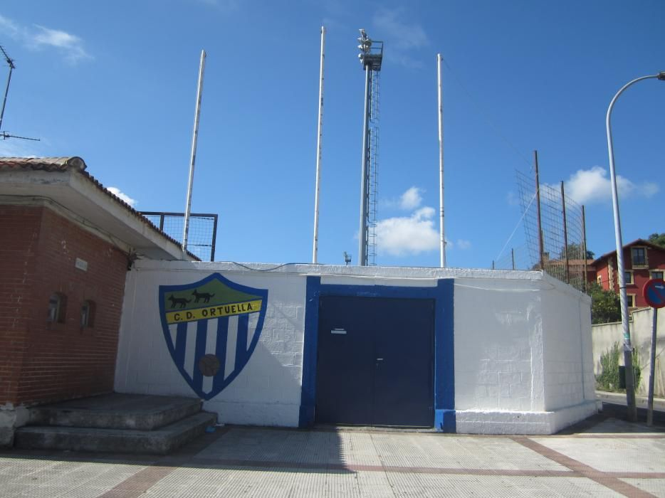

Inicio / Club / Otxartaga Berri
Otxartaga Berri
Nuestra casa desde 1984, en la Avenida de la Estación de Ortuella.

100×60metros
512asientos en grada
1984inaugurado
Hierba artificial renovada en 2018. Aforo máximo en partidos: 644 personas.
Cómo llegar
Dirección: Avenida de la Estación s/n, 48530 Ortuella (Bizkaia).
Entradas
Precios de la web antigua, pendientes de confirmar.
La tribuna
